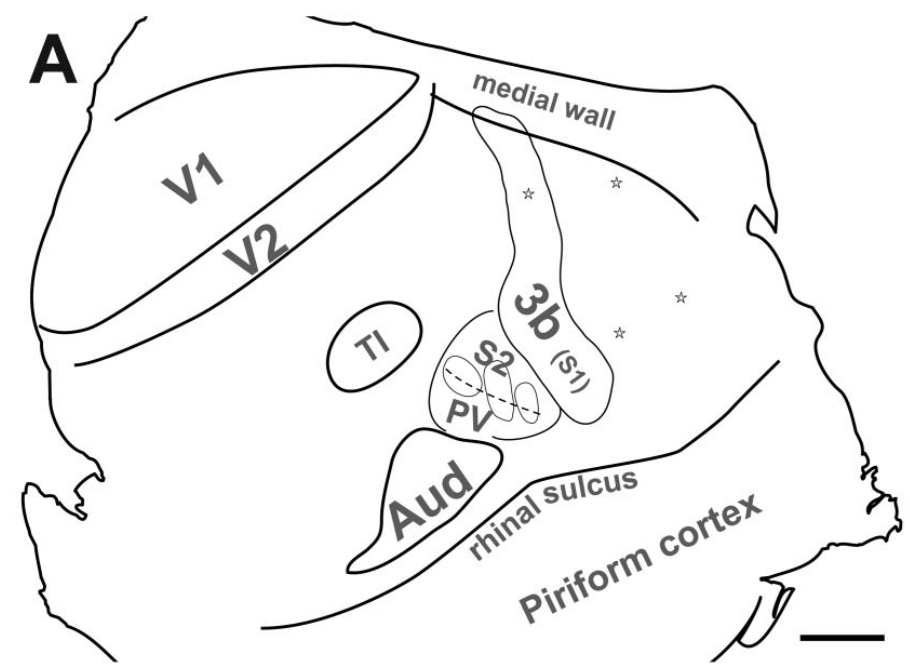
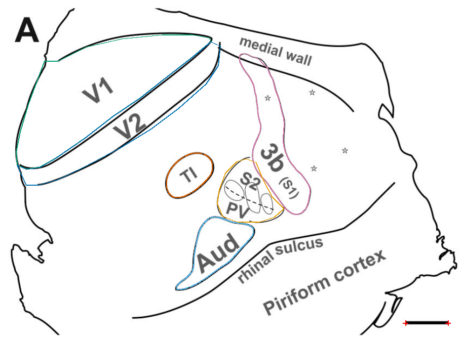
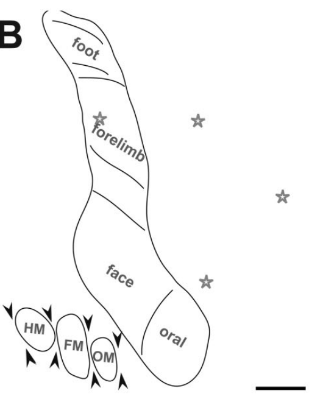
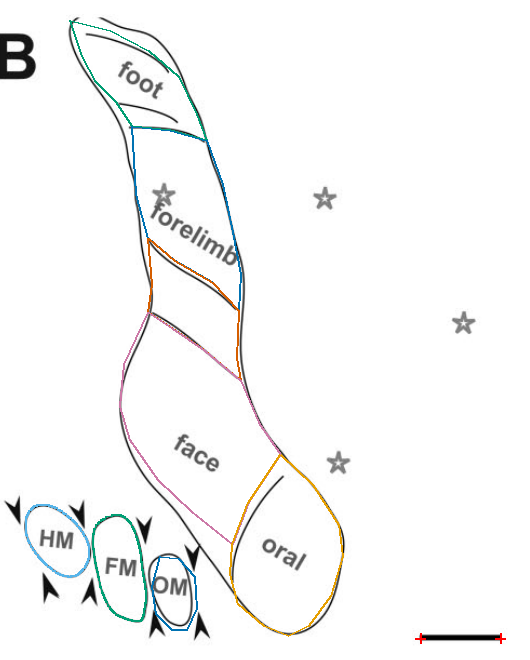
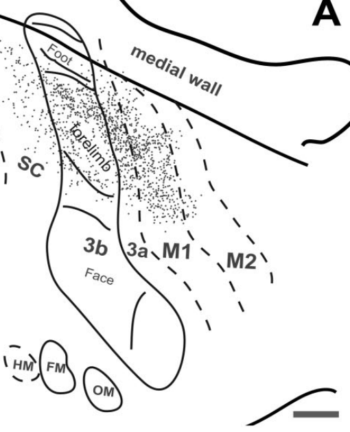
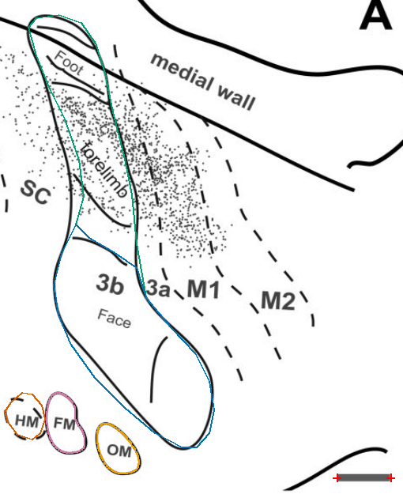
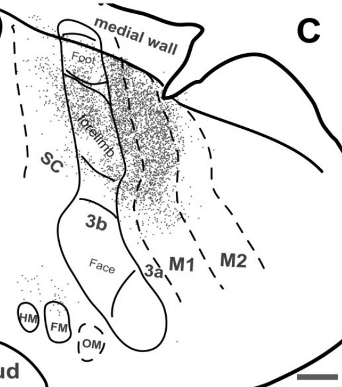
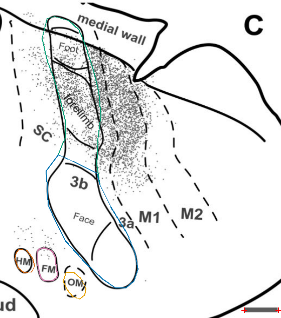

Source image, saved anatomical outlines and scale endpoints. Unfinished fields are NA.
Provisional digitization; inspect anatomical boundaries.


| Field | mm² | % neocortex | Status |
|---|---|---|---|
| V1_visible_component | 27.375 | NA | provisional; anatomical review required |
| V2 | 13.943 | NA | provisional; anatomical review required |
| TI | 3.192 | NA | provisional; anatomical review required |
| S1_3b | 9.839 | NA | provisional; anatomical review required |
| S2_PV_modules | 6.148 | NA | provisional; anatomical review required |
| Aud | 5.650 | NA | provisional; anatomical review required |
| whole_neocortex | NA | NA | not_measurable |
| M1 | NA | NA | not_measurable |
| M2 | NA | NA | not_measurable |
| V1_complete | NA | NA | not_measurable |
Provisional digitization; inspect anatomical boundaries.


| Field | mm² | % neocortex | Status |
|---|---|---|---|
| S1_foot | 1.164 | NA | provisional; anatomical review required |
| S1_forelimb | 1.861 | NA | provisional; anatomical review required |
| S1_unlabelled_intermediate_strip | 0.981 | NA | provisional; anatomical review required |
| S1_face | 3.225 | NA | provisional; anatomical review required |
| S1_oral | 2.158 | NA | provisional; anatomical review required |
| S2_PV_HM | 0.505 | NA | provisional; anatomical review required |
| S2_PV_FM | 0.668 | NA | provisional; anatomical review required |
| S2_PV_OM | 0.396 | NA | provisional; anatomical review required |
Provisional digitization; inspect anatomical boundaries.


| Field | mm² | % neocortex | Status |
|---|---|---|---|
| S1_3b | 10.641 | NA | provisional; anatomical review required |
| S1_face_oral | 6.333 | NA | provisional; anatomical review required |
| S2_PV_HM | 0.451 | NA | provisional; anatomical review required |
| S2_PV_FM | 0.575 | NA | provisional; anatomical review required |
| S2_PV_OM | 0.505 | NA | provisional; anatomical review required |
| M1 | NA | NA | not_measurable |
| M2 | NA | NA | not_measurable |
Provisional digitization; inspect anatomical boundaries.


| Field | mm² | % neocortex | Status |
|---|---|---|---|
| S1_3b | 10.462 | NA | provisional; anatomical review required |
| S1_face_oral | 5.758 | NA | provisional; anatomical review required |
| S2_PV_HM | 0.283 | NA | provisional; anatomical review required |
| S2_PV_FM | 0.468 | NA | provisional; anatomical review required |
| S2_PV_OM | 0.344 | NA | provisional; anatomical review required |
| M1 | NA | NA | not_measurable |
| M2 | NA | NA | not_measurable |
Second precision pass: source/before/after comparisons and remaining limitations